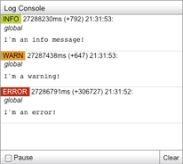
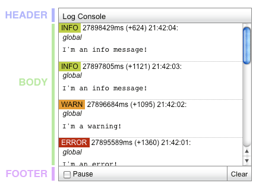
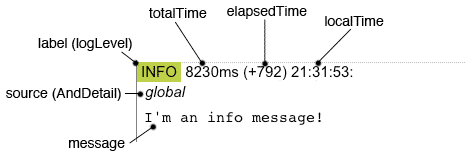

<?php 
$title="The Console tool";
$section="console";
$component="Console";
$highlightSyntax = true;
$releasenotes = true;
include "../inc/header.inc";
?>
<div id="yui-main">
	<div class="yui-b">
		<div class="yui-ge">
			<div class="yui-u first" id="main">
			<!-- main column -->
			
				<h2><?php echo $component;?></h2>
			
				<div id="promo" class="component">
   <p>
    The Console tool provides a display to read log messages emitted by the YUI logging subsytem. With this tool, you can tap into the rich event-driven messages included with the YUI Library's debug files.  This messaging allows you to get a fuller picture of the inner workings of any YUI Library component.</p>
   <p>Additionally, when building your own Widgets, utilities or applications, you can include your own log statements and use the Console to aid in development and debugging.  As a simple message display mechanism, you can also repurpose Console through extention or configuration to listen to a different input source and display messages differently.</p>

					<div class="yui-g">
						<div class="yui-u first">
							<div id="jumps">
								<h4>On This Page</h4>
								<ul>
									<li><a href="#start">Getting Started</a></li>
									<li><a href="#using">Using the <?php echo $component;?></a>
										<ul class="topspace">
                                            <li><a href="#setup">Creating a Console</a></li>
                                            <li><a href="#display">Console display</a></li>
                                            <li><a href="#controls">Console interaction</a></li>
                                            <li><a href="#messages">About log messages</a></li>
                                            <li><a href="#logging">YUI logging subsystem</a></li>
                                            <li><a href="#filter">Filtering incoming messages</a></li>
                                            <li><a href="#events">Console events</a></li>
										</ul>
                                    </li>
									<li><a href="#support">Support &amp; Community</a></li>
									<li><a href="#filingbugs">Bug Reports &amp; Feature Requests</a></li>
								</ul>
							</div>
						</div>
						<div class="yui-u">
							<?php
							include('../inc/quicklinks.inc');
							?>
						</div>
					</div>				
					<div class="clear"></div>
				</div><!-- /promo -->
				
				<?php
                    $componentShort = "Console";
                    $requiredModules = array("console");
                    include("../inc/gettingStarted.inc");
                ?>
				
				<h3 id="using">Using the <?php echo $component;?></h3>
			
				<p>This section describes how to use the <?php echo $component;?> in further detail.  It contains these subsections:</p>
				<ul class="topspace">
                    <li><a href="#setup">Creating a Console</a></li>
                    <li><a href="#display">Console display</a></li>
                    <li><a href="#controls">Console interaction</a></li>
                    <li><a href="#messages">About log messages</a>
                        <ul>
                            <li><a href="#buffered">Messages are buffered</a></li>
                            <li><a href="#order">Set <code>newestOnTop</code> to control message order</a></li>
                            <li><a href="#anatomy">Anatomy of a message</a></li>
                        </ul>
                    </li>
                    <li><a href="#logging">YUI logging subsystem</a></li>
                    <li><a href="#filter">Filtering incoming messages</a></li>
                    <li><a href="#events">Console events</a></li>
				</ul>
				
                <h4 id="setup">Creating a Console</h4>
                <p>Creating an instance of Console is very easy; there are no required configuration attributes, and it is typically rendered without reference to an existing DOM element.</p>

<textarea name="code" class="JScript" cols="60" rows="1">
YUI({..}).use('console', function (Y) {

// Console has no required configuration
var yconsole = new Y.Console();

yconsole.render();

});
</textarea>

                <p>The moment a Console instance is instantiated, it starts listening to the <a href="#logging">YUI logging subsystem</a>.  When it is <code>render()</code>ed, it will immediately display any accumulated messages since construction.</p>

                <h4 id="display">Console display</h4>

                <p>The Console has a very simple display, split into a header, body, and footer.</p>

                

                <p>The Sam skin places the Console absolutely in the top right corner of the page.  This can be easily overridden with CSS should you need the Console elsewhere.  The <a href="/yui/3/examples/console/console_basic.html">Creating a Console for debugging</a> example illustrates how to accomplish this.</p>
                
                <h4 id="controls">Console interaction</h4>

                <p>Pause the Console with either the checkbox in the Console footer or by setting the <code>paused</code> attribute.  When paused, messages will accumulate in teh buffer, but will not be displayed until the Console is unpaused.</p>
                
                <p>Flush the body of messages by clicking the Clear button in the Console footer or calling the instance's <code>clearConsole()</code> method.  Clearing the Console will also flush the buffered messages not yet printed.</p>

                <p>Hide and show the Console with the instance's <code>hide()</code> and <code>show()</code> methods or by setting the <code>visible</code> attribute.</p>

                <p>Clear the Console, flush the buffer, unpause, and reseed the Console's <code>startTime</code> attribute by calling the instance's <code>reset()</code> method.</p>

                <h4 id="messages">About log messages</h4>

                <h5 id="buffered">Messages are buffered</h5>

                <p>Incoming log messages are buffered and rendered after a timeout so as to avoid impacting the normal operation of the page.  The length of the timeout is configurable with the <code>printTimeout</code> attribute.  By default, the timeout is 100 milliseconds.</p>
                
                <h5 id="order">Set <code>newestOnTop</code> to control message order</h5>

                <p>Messages are rendered into the body of the Console either at the top or bottom, based on the <code>newestOnTop</code> configuration.  By default, new messages are added to the top (<code>newestOnTop = true</code>).  Setting this to <code>false</code> will cause new messages to be appended to the body below previous messages.</p>
                
                <p>By default, Console will scroll the body to view the latest message.  To disable this, set the <code>scrollIntoView</code> configuration to false.</p>

                <h5 id="anatomy">Anatomy of a message</h5>
                <p>Incoming log messages are normalized to objects with the following properties:</p>

                <dl>
                    <dt><code>message</code></dt>
                        <dd>The message text</dd>
                    <dt><code>category</code></dt>
                        <dd>The category or log level of the message (e.g. &quot;info&quot; or &quot;warn&quot;)</dd>
                    <dt><code>sourceAndDetail</code></dt>
                        <dd>The name of the source module and instance information if provided (usually this is the same as <code>source</code>)</dd>
                    <dt><code>source</code></dt>
                        <dd>The name of the source module</dd>
                    <dt><code>label</code></dt>
                        <dd>The category label (e.g. &quot;INFO&quot;) used to identify the category in the display</dd>
                    <dt><code>localTime</code></dt>
                        <dd>The time the message was received</dd>
                    <dt><code>elapsedTime</code></dt>
                        <dd>The time elapsed since the last message was received</dd>
                    <dt><code>totalTime</code></dt>
                        <dd>The time elapsed since the Console was instantiated</dd>
                </dl>

                <p>This object is then used to provide content for the markup template configured in the Console's <code>entryTemplate</code> attribute.  The default template has the following structure:</p>

<textarea name="code" class="HTML" cols="60" rows="1">
<pre class="yui-console-entry yui-console-entry-{category} yui-console-entry-{source}">
   <div class="yui-console-entry-meta">
       <p>
           <span class="yui-console-entry-cat">
              {label}</span>
           <span class="yui-console-entry-time">
               {totalTime}ms (+{elapsedTime}) {localTime}:
           </span>
       </p>
       <p class="yui-console-entry-src">
           {sourceAndDetail}
       </p>
   </div>
   <p class="{entry_content_class}">{message}</p>
</pre>
</textarea>

                <p>Sam skin styles this markup to look like this:</p>

                

                <h4 id="logging">YUI logging subsystem</h4>

                <p>The entry point to YUI's logging subsystem is the YUI instance's <code>log(..)</code> method.</p>

<textarea name="code" class="JScript" cols="60" rows="1">
var Y = new YUI({ debug : true });

//       message     category  source
Y.log("Hello world!", "info",  "myapp");
</textarea>

                <p>If the YUI instance is configured with debug set to true (the default), any calls to <code>Y.log(..)</code> will be broadcast through the <code>yui:log</code> event with the message, category, and source information passed along.</p>
                
                <p>Additionally, if your browser supports a native <code>console</code> object, the message will be output there as well.  Native console logging can be disabled with the YUI configuration <code>useBrowserConsole</code> set to <code>false</code>.  <em>This is the recommended setting when using Console</em>.</p>

                <p>Console instances subscribe to the <code>yui:log</code> event when they are instantiated.</p>

                <h4 id="filter">Filtering incoming messages</h4>

                <p>You can filter log messages in a number of ways:</p>

                <ol>
                    <li>Non-debug files do not include <code>Y.log(..)</code> statements.</li>
                    <li>The YUI config <code>logExclude</code> and <code>logInclude</code> affect which sources will have their messages broadcast via <code>yui:log</code>.</li>
                    <li>The YUI config or Console instance attribute <code>logLevel</code> affects which categories are output to the Console UI.</li>
                    <li>Console instances' <code>entry</code> event is used to pass incoming messages to the print buffer.  Calling </code>preventDefault()</code> from a subscriber will cancel this communication for the given message.</li>
                    <li><code>YUI({ debug: false })</code> or <code>Y.config.debug = false</code> will silence all calls to </code>Y.log(..)</code>.</li>
                </ol>

<textarea name="code" class="JScript" cols="60" rows="1">
YUI({
    filter     : 'debug',      // request debug versions of modules
    useBrowserConsole : false, // don't log to native console
    logLevel   : 'warn',       // don't print info messages
    logExclude : {
        event     : true,      // don't broadcast log messages from either
        attribute : true       // event or attribute modules
    },
    debug : true               // broadcast yui:log (this is the default)
}).
use('console', 'other', 'modules', 'etc', function (Y) {

    var yconsole = new Y.Console();

    // Ignore any message with the string "green" in the text
    yconsole.on('entry', function (e) {
        if (e.message.message.indexOf('green') > -1) {
            e.preventDefault();
        }
    });

    /* YOUR CODE HERE */

});
</textarea>

                <p>The debug versions of YUI modules include log statements that identify the module as the source so you can

                <h4 id="events">Console events</h4>

                <table>
                <thead>
                    <tr>
                        <th>Event</th>
                        <th>When</th>
                        <th>Payload</th>
                    </tr>
                </thead>
                <tbody>
                    <tr>
                        <td><code>reset</code></td>
                        <td>In response to calls to an instance's <code>reset()</code> method.  The default function for the event performs the reset detailed above.</td>
                        <td>none</td>
                    </tr>
                    <tr>
                        <td><code>entry</code></td>
                        <td>In response to messages being received from the <code>yui:log</code>.  The default function for the event normalizes and buffers messages and schedules the a print cycle.</td>
                        <td>{ message : (normalized message object) }</td>
                    </tr>
                </tbody>
                </table>

                <p>This is not an exhaustive list.  See the <a href="/yui/3/api/module_<?php echo($section); ?>.html">API docs</a> for a complete listing.</p>


<?php # include "../inc/mobileSection.inc";?>
<?php include "../inc/support.inc"; ?>

		</div>
<div class="yui-u sidebar">

	<?php include "../inc/cheatsheet.inc"; ?>
			
			<div id="examples">
<?php include("../inc/examplesNav/".$section.".inc"); ?>
		   </div>
		   
		<!--div id="morereading" class="mod box4">
			<div class="hd">
				<h4>More Reading about the YUI <?php echo $component;?>:</h4>
			</div>
			<div class="bd">
				<ul>
					<li><a href="http://www.json.org/">JSON.org</a></li>
					<li><a href="http://tools.ietf.org/html/rfc4627">RFC 4627</a></li>
				  	<li><a href="http://en.wikipedia.org/wiki/JSON">JSON on Wikipedia</a></li>
					<li><a href="http://oreilly.com/catalog/9780596517748/index.html">JavaScript: The Good Parts</a>, by Douglas Crockford</li>
			   </ul>
		   </div>
		</div-->
		   
		<!-- delicious module -->
		<?php require('../inc/mod-delicious.inc'); ?>
		<!-- /delicious module -->


		 </div>
      </div>

</div>
</div>

<?php include "../inc/side.inc" ?>
<?php include "../inc/footer.inc" ?>
